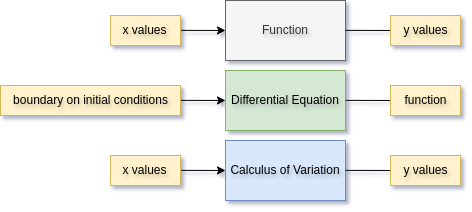
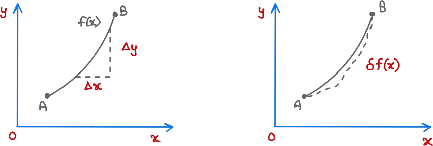
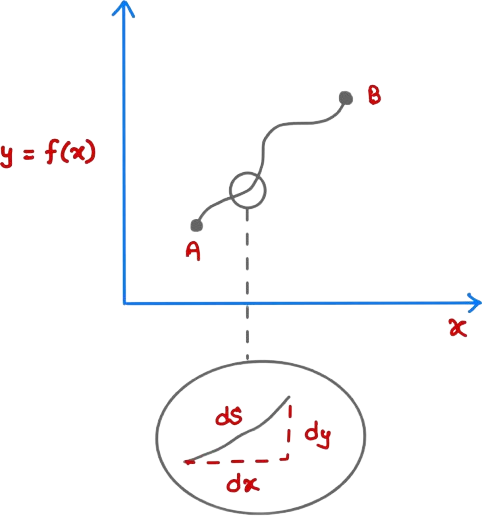

In many engineering tasks, we can think of “optimization” as the process of finding the best settings—called parameters—to guide a system from its starting position to a desired end state at the smallest possible cost. More concretely, we define a cost function \(J(x,u)\), where \(x\) represents the current condition of the system (its state), and \(u\) represents the control input (the adjustments we make). The goal of optimization is simply to choose \((x,u)\) so that the performance measure \(J(x,u)\) becomes as small as possible.
Furthermore, some problems demand us to put some restrictions on the state of the system \(x\) as well as the control input \(u\). Under such condition the optimization problem can be formulated as:
$$\min_{(x,u)} J(x,u) \quad \quad \text{subject to} \quad \quad x\in\mathcal{X}, u \in \mathcal{U}$$
If there are additional constraints (such as linear inequalities, nonlinear relations, or dynamic equations), they can be incorporated explicitly. For example:
$$
\min_{(x,u)} J(x,u)
\quad \text{subject to} \quad
\begin{cases}
g(x,u) \leq 0, \\
h(x,u) = 0, \\
x \in \mathcal{X}, u \in \mathcal{U}.
\end{cases}
$$
There may be infinitely many functions that satisfy the given constraints, yet only a select few achieve the desired goal with minimal cost. The channelge lies in idnetifying these optimal functions or trajectories that best guide the system.
This is where the Calculus of Variation comes into play, it provides the mathematical framework to determine a stationary function that optimally solves the given optimization problem.
On Function, Differential Equation, and the Calculus of Variations
1. Funtions and Their Role:
A function \(f: \mathbb{R} \rightarrow \mathbb{R}\) maps an input \(x\) from a domain \(\mathcal{D} \subseteq \mathbb{R}\) to an output \(y\), where:
$$f: x \rightarrow y = f(x)$$
In other words, a function takes numerical inputs and return numerical outputs: \(\mathbb{R} \rightarrow \mathbb{R}\), \(x \rightarrow f(x)\)
2. Differential Equations and Their Solutions
A differential equation is an equation that relates a function \(f(x)\) to its derivatives. Instead of prescribing explicit function values, it imposes constraints on the function's rate of change. A general ordinary differential equation (ODE) of order \(n\) takes the form:
$$F\left(x, f, f', \dots, f^{(n)}\right) = 0$$
Unlike a function, which maps numbers to numbers, a differential equation takes initial or boundary conditions and returns a function as its solution. For example, a simple second-order ODE with boundary conditions:
$$\frac{d^2y}{dx^2} + p(x)\frac{dy}{dx} + q(x)y = r(x); \quad y(a) = \alpha, \quad y(b) = \beta$$
3. Calculus of Variations: From Functionals to Differential Equations
The calculus of variations generalizes optimization to function spaces. Instead of finding a number that minimizes a function, we seek a function \(f(x)\) that minimizes a functional.
A functional is a mapping from a function space to real numbers: $$F(f) = \int_a^b L(x, f, f')dx$$
Given an objective functional \(F(f)\) and constraints (e.g., boundary conditions), the calculus of variations outputs a differential equation whose solution is the optimal function.

4. Ordinary Calculus Vs. Calculus of Variations
Ordinary Calculus studies small variations in the input \(x\) of a function \(f(x)\) and their effects on \(f(x)\), whereas Calculus of Variations studies small perturbations in an entire function \(f(x)\) and how they affect a functional \(F(f)\).
In ordinary calculus, we consider first-order changes: $$\delta y \approx f'(x)\delta x$$
In calculus of variations, we analyze how small changes in a function \(f(x)\) affect an integral functional: $$\delta F = F[f + \epsilon \eta] - F(f)$$ where \(\eta(x)\) is an arbitrary perturbation function, and \(\epsilon\) is a small perturbation.
Thus, ordinary calculus operates on numbers, whereas calculus of variations operaters on functions themselves.

Variation of a Functional
In multivariable-calculus, there is a concept called total-differentiation of a function e.g: \(df = \frac{\partial f}{\partial x}dx + \frac{\partial f}{\partial y}dy\). In an analogous manner, variation of functional is the "total change in functional". This is denoted by \(\delta F(f)\) for a functional \(F(f)\). The "differentiation" or variation of a functional is written as; $$\delta F(f) = \int_a^b \frac{\delta F}{\delta f} \delta f \ dx$$
Here, \(\frac{\delta F}{\delta f}\) is called functional derivative of any functional written as a definite integral and is given by; $$\frac{\delta F}{\delta f} = \frac{\partial L}{\partial f} - \frac{d}{dx}\frac{\partial L}{\partial f'}$$
which is the functional derivative of a general functional that can be written as \(F(f) = \int_a^b \mathcal{L}(x,f,f')\ dx\), where \(\mathcal{L}(x,f,f')\) is called the Lagrangian.
Euler-Lagrange Equation
This equation is often taken as the starting point to solve any calculus of variation problems. This specifically applies to the functionals written in the form of a definite integral \(F(f) = \int_a^b \mathcal{L}(x,f,f')\ dx\). It is a second-order differential equation that any functional has to satisfy in order to have a stationary value.
$$\textcolor{orange}{\frac{\partial L}{\partial f} - \frac{d}{dx}\frac{\partial L}{\partial f'} = 0}$$
Solving this gives stationary function(s) for a given functional \(F(f)\) i.e. \(\frac{\delta F}{\delta f} = 0\) (variation is zero).
Example: (Shortest Path Problem)

Here, \(dS = \sqrt{dx^2 + dy^2}\) and the total length of the trajectory from A to B is given by:
$$\begin{equation}
\begin{split}
S &= \int_A^B dS = \int_A^B \sqrt{dx^2 + dy^2} \\
&= \int_{(x_1, y_1)}^{(x_2, y_2)} \sqrt{dx^2 \left(1 + \frac{dy^2}{dx^2}\right)}\\
&= \int_{x_1}^{x_2} \sqrt{1 + \left(\frac{dy}{dx}\right)^2}\ dx\\
\therefore\ S &= \int_{x_1}^{x_2}\sqrt{1 + \left(y'\right)^2}\ dx
\end{split}
\end{equation}$$
In the shortest path problem, the arc length is a functional and the Lagrangian is \(\mathcal{L}(x,y,y') = \sqrt{1 + \left(\frac{dy}{dx}\right)^2}\) and \(F(y) = \int_{x_1}^{x_2}\mathcal{L}(x,y,y')\ dx\).
Now, we generate many random functions and evaluate the path length. Let, \(f^*\) be the optimal function representing the shortest path length. If we add a small perturbation to \(f^*\); the following is true:
$$F(f^*) \leq F(f^* + \epsilon \eta) = F(f^* + \delta f^*)$$
The term \(\epsilon \eta\) is called the variation of the function \(f^*\) and \(\delta f^* = \epsilon \eta\). \(\epsilon\) is a small number so the variation is also small. We now analyze how the function changes as \(\epsilon \rightarrow 0\).
Note that \(\eta (x_1) = \eta (x_2) = 0\) because any variations must include the points A and B. The reason for introducing \(\delta f^*\) or \(\epsilon \eta\) is to make the functional optimization into a function optimization.
If we take a look at \(F(f^* + \epsilon \eta)\); it only depends on \(\epsilon\) i.e. \(F(f^* + \epsilon \eta)\) is a function of \(\epsilon \Rightarrow F(\epsilon)\). \(F(\epsilon)\) returns path length for \(f^*(x) + \) variation \(\epsilon \eta\). Now, solve for minimization problem for the function \(F(\epsilon)\) i.e.
$$
F'(0) = \frac{dF}{d\epsilon}\Big|_{\epsilon=0} = 0 \Rightarrow F'(0) = \int_{x_1}^{x_2}\frac{d\mathcal{L}}{d \epsilon}\Big|_{\epsilon=0}\ dx = 0 \tag{*}
$$
Note: \(y = f^* + \epsilon \eta\) and \(y' = f^{*'} + \epsilon \eta'\)
\(\therefore \quad f^{*'} = \frac{c}{\sqrt{1-c^2}}\) (call it "m")
Here, the optimal function \( f^* \) is:
\[
\frac{dy}{dx} = f^* = m \Rightarrow \int dy = \int m dx
\]
\[
\textcolor{orange}{\therefore y(x) = mx + c}
\]
which is the equation of a straight line.
Plugging in the boundary conditions \( f(x_1) = y_1 \) and \( f(x_2) = y_2 \), we get the values for \( m \) and \( c \):
\[
y = \left( \frac{y_2 - y_1}{x_2 - x_1} \right) (x - x_1) + y_1
\]